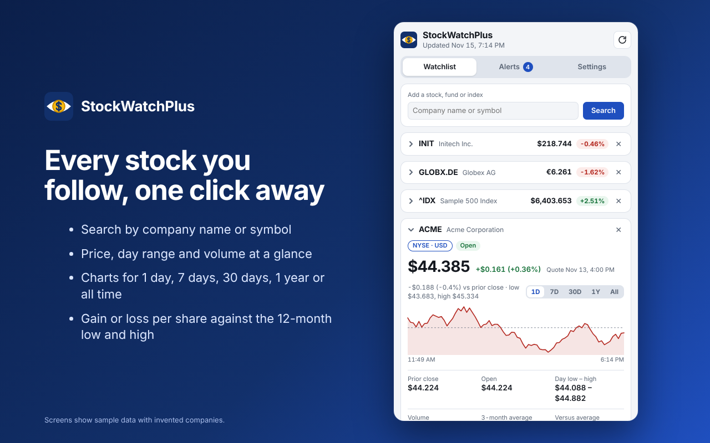
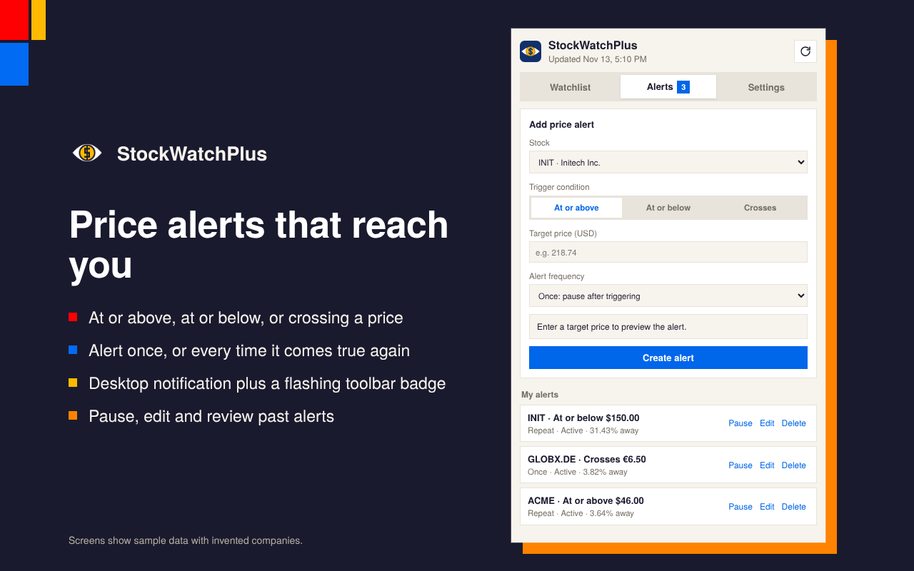
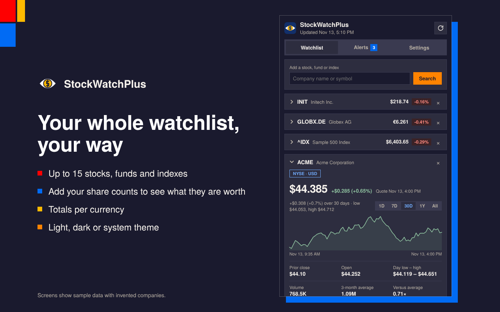

StockWatchPlus
The stocks you care about, one click away in your browser toolbar, with alerts when a price reaches a level you set.
Free in the stores: Chrome Web Store Microsoft Edge Add-ons

What it does
- Search by company name or symbol and build a watchlist of up to 15 stocks, funds or indexes.
- See the price, the change against the prior close, the day's range and whether the market is open.
- Switch the chart between 1 day, 7 days, 30 days, 1 year and all time.
- Compare volume with the 3-month average.
- See the 12-month low and high, and the gain or loss per share against each.
- Add your share counts to see what your holdings are worth, with totals per currency.
- Set price alerts: at or above, at or below, or crossing a price, once or repeating.
- Get a desktop notification and a flashing toolbar badge when an alert is reached.
- Choose a light, dark or system theme and one of seven colors.
- Export your list to a file and import it on another computer.


The pictures show sample data with invented companies.
Private by design
There is no account and no sign-in. Your watchlist, share counts and alerts stay in your browser on your own device. Only the stock symbols you watch are sent to the quote service. Read the privacy policy.
Good to know
- Quotes come from an unofficial Yahoo Finance service. They can be delayed by 15 minutes or more and are sometimes unavailable.
- Alerts are checked each time quotes refresh, while the browser is running. A price that reaches a target and moves back between two checks is missed.
- This is not investment advice. StockWatchPlus is an independent project and is not affiliated with Yahoo, any stock exchange, or any company whose shares it displays.
Support
Questions or problems: pavwerk@gmail.com